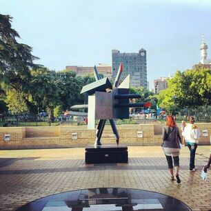

Which City?

The city I would like to visit is Stellenbosch.
Located in the heart of the Western Cape wine region,
Stellenbosch is a picturesque town that's surrounded by rolling vineyards and majestic mountains.
The mountains offer plenty of hiking trails and stunning views of the surrounding landscape.
It's a great place to sample some of the country's best wines and explore the
historic Cape Dutch architecture.
Stellenbosch is the second oldest town in South Africa, founded in 1679 by Simon van der Stel,
the Governor of the Cape Colony.
The city has a rich cultural heritage, with numerous museums, galleries, and historic buildings,
including the Village Museum, which showcases the town's colonial history.
The city has a vibrant food scene, with a variety of restaurants and cafes serving up delicious
local cuisine, including traditional South African dishes like bobotie and biltong.
Stellenbosch is a popular destination for outdoor enthusiasts, with plenty of opportunities for
cycling, mountain biking, horse riding, and golfing. Overall, Stellenbosch is a fascinating and
beautiful city with a rich history and culture, world-class wine industry, and stunning natural
scenery, making it a must-visit destination in South Africa.
Foreign Language
Swahili is a language that I would like to learn.
This Bantu language is spoken by over 100 million people in Africa,
and is the official language of Kenya, Tanzania, and Uganda.
I am interested in learning Swahili because it is a widely spoken language in East Africa,
where I hope to travel one day. Additionally, Swahili has a rich history and culture associated with it.
For example, did you know that the word "Swahili" comes from the Arabic word "sahel," which means
"coast"? This reflects the historical influence of Arabic traders and settlers along the East African coast,
which has left a lasting impact on Swahili language and culture.
| English Phrase |
Swahili Translation |
| Hello |
Habari |
| Goodbye |
Kwaheri |
| Thank you |
Asante |
| Please |
Tafadhali |
| Excuse me |
Samahani |
Historic Places in Johannesburg
Apartheid Museum
1. The Apartheid Museum chronicles the history of apartheid in South Africa, including the rise of apartheid, the struggle against it, and its eventual dismantling.
2. The museum contains over 20 exhibition areas, each with its own unique audio-visual experience.
3. The museum's exhibits include artifacts, photographs, and multimedia displays that provide a powerful and immersive experience of apartheid's impact on South Africa and its people.
Constitution Hill
1. The Constitution Hill is a former prison and military fort that now houses the Constitutional Court of South Africa.
2. The prison was used to detain anti-apartheid activists like Nelson Mandela, Mahatma Gandhi, and Albert Luthuli, as well as common criminals.
3. In addition to the court and prison museums, Constitution Hill also contains an art gallery, a bookshop, and a restaurant.
The Johannesburg Art Gallery
1. The Johannesburg Art Gallery (JAG) is the largest art museum in sub-Saharan Africa, with a collection of over 9,000 works of art.
2. JAG was established in 1910 and has been located in its current building in Joubert Park since 1986.
3. The museum's collection includes works by famous South African artists like Gerard Sekoto, William Kentridge, and JH Pierneef, as well as works by international artists like Pablo Picasso, Claude Monet, and Auguste Rodin.
